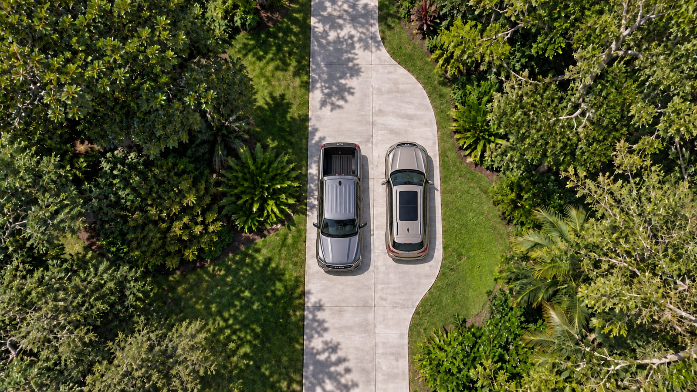
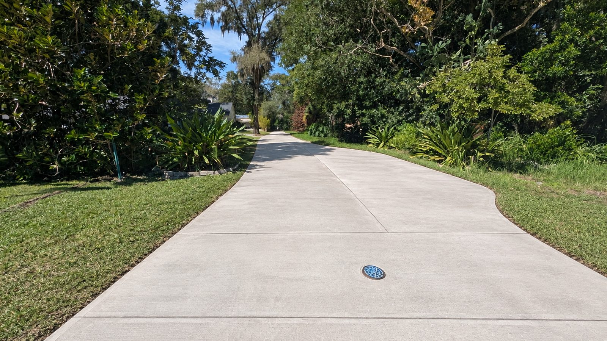
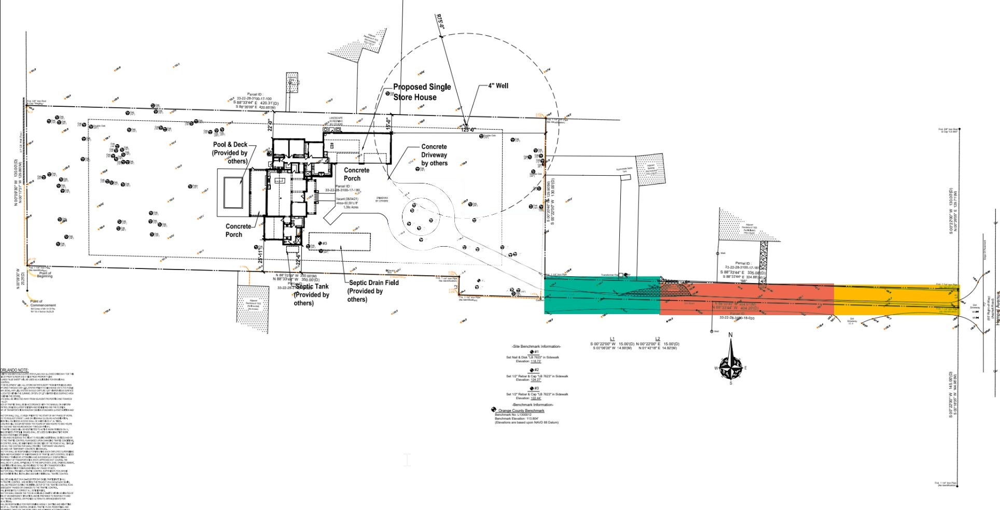
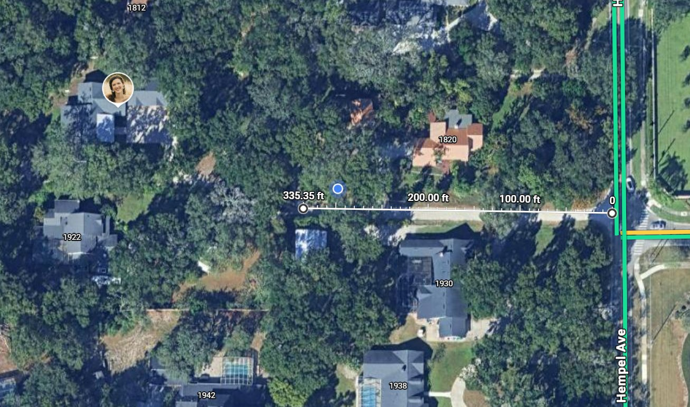

Street entrance
Where the road meets the street. A clean concrete apron instead of loose sand spilling onto the pavement.
Tip: drag anywhere on a photo, or tab to it and use the arrow keys.
Our shared dirt road washes out, ruts up, and tracks sand into every car and garage. Here is what it could look like as a poured concrete driveway. Drag the slider on each photo to compare today with the finished version.
The first stretch of the shared road, as you turn in from the street.
Where the road meets the street. A clean concrete apron instead of loose sand spilling onto the pavement.
Tip: drag anywhere on a photo, or tab to it and use the arrow keys.
The straight run through the trees, paved edge to edge.
The concrete runs right up to 1930's existing driveway, with no strip of loose sand between the two.
The concrete meets the pavers at the start of 1820's driveway, one continuous surface through the turn.
The end of the shared road, where 1922 and 1830 go their separate ways.
The entire shared road as seen from 1830 and 1922, looking back toward Hempel Ave.
The road is about 12 ft wide, room for one car at a time. A pull-off is a short, wider stretch where one car can wait while another goes by. There are two places it could go.

The wider section fits two cars side by side.

By the street, near the Hempel Ave end of the road.
The road is not used equally. 1830 and 1922 drive the full length from Hempel Ave. 1820 turns off partway down and 1930 turns off near the street. So each stretch of road is split evenly among the households that use it, and each household's share is the sum of its stretches.


These are estimates, not quotes. $11 per sq ft is the middle of the $10 to $13 Orlando range for 4 inch, fiber reinforced, broom finish concrete. Fixed costs cover things that are paid once per job: mobilization, permit, equipment and a pump truck if needed.
Shared road: 335 ft long by about 12 ft wide, plus the apron at Hempel.
The whole cost, fixed costs included, is split by road use. Distances are scaled from the recorded survey of 1830 Hempel and match a Google Maps measurement within a few inches.
| Household | Share | Cost |
|---|
A starting framework for a shared driveway maintenance agreement. Recorded with Orange County, it stays with each house if it sells, so the next owner is bound by the same terms.
Repairs are split the same way as the pour. Yellow: all four. Red: 1820, 1830 and 1922. Green: 1830 and 1922.
Each household maintains its own driveway past the point where it leaves the shared road.
Sweeping, edging and trimming overhanging branches. Each household handles what borders its own lot, with no cost sharing.
If a household's dumpster, moving truck or contractor cracks a slab, that household pays for the repair.
Repairs under an agreed amount, such as $1,000, can go ahead. Larger ones need approval from households holding more than half the shares. Emergency fixes can be made right away.
One neighbor coordinates quotes and invoices. Everyone pays their share within 30 days. An optional reserve of $100 to $200 per household a year avoids collecting each time.
The live oaks along the road will eventually lift slabs. We should agree now whether root damage is shared or falls on the tree's owner, and ask bidders about root barriers.
The section in the county right of way needs a county permit and is maintained by the owners, not the county. It sits in the yellow section, so all four share it.
Try mediation before anything else. A real estate attorney drafts and records the final agreement, a small cost when split four ways.
This is a framework to discuss, not legal advice. Existing deeds may already include a recorded easement or maintenance terms, so the attorney should check those first.
Confirm all four households are interested in paving the shared road.
Get at least three concrete contractor bids for the same scope and thickness.
Agree on the percentages and the maintenance terms, and record both in one agreement.
Pick a contractor and a date, and plan parking and access for the cure period.